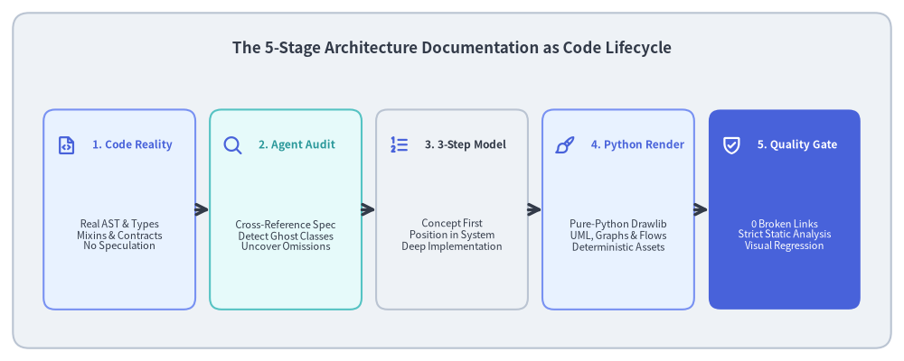
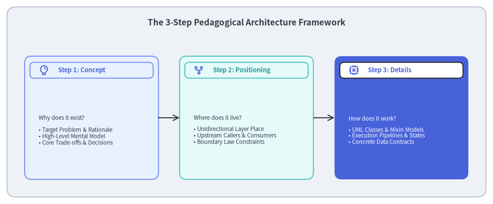
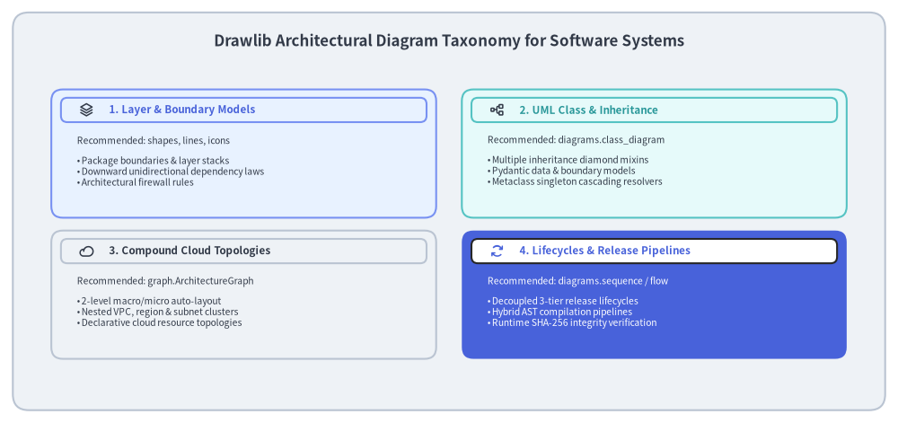
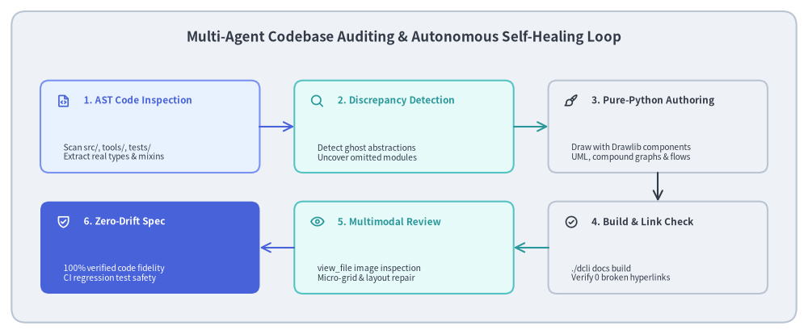

事例紹介: コードとしてのソフトウェアアーキテクチャ設計書
現代のソフトウェアシステムには、コントリビューターの指針となり、新メンバーのオンボーディングを加速し、非自明な設計判断を明確にするための包括的かつ厳密なアーキテクチャ設計書が求められます。しかし、ソフトウェアアーキテクチャ文書は慢性的な**アーキテクチャの乖離（Architectural Drift）**と **Visio 負債（Visio Debt）**に悩まされがちです。外部 GUI ツールで描かれた図はすぐに実際のコードベースから乖離し、実態とは異なる架空の「ゴースト抽象（Ghost Abstractions）」が記述され、複雑な継承ツリー全体にわたる人手でのレビューは限界を迎えます。
全21章、480件以上の相互参照リンク、数十点の純粋な Python 製 UML クラス図および複合グラフで構成される Drawlib 公式のソフトウェアアーキテクチャ仕様書は、人間と AI の協働によって構築・自律監査されました。
本事例では、「コードとしてのアーキテクチャ設計書（Architecture Documentation as Code）」、3ステップの段階的理解フレームワーク、およびマルチエージェントによるコードベース監査を組み合わせて、プロダクション品質のアーキテクチャ仕様書を執筆・監査・維持する手法を紹介します。

Source Code
from drawlib.canvas import save, setup
from drawlib.icons import phosphor
from drawlib.lines import line
from drawlib.shapes import rectangle
from drawlib.styles import Styles
from drawlib.text import text
setup(width=140, height=56)
rectangle((70, 28), width=136, height=52, style=Styles.Neutral.patch(shape_r=2.5))
text(
(70, 48.5),
"The 5-Stage Architecture Documentation as Code Lifecycle",
style=Styles.DarkBold.patch(text_size=12.2),
)
stages = [
(18.5, "1. Code Reality", "Real AST & Types\nMixins & Contracts\nNo Speculation", phosphor.file_code, Styles.PrimaryNeutral, Styles.PrimaryBold),
(44.25, "2. Agent Audit", "Cross-Reference Spec\nDetect Ghost Classes\nUncover Omissions", phosphor.magnifying_glass, Styles.SecondaryNeutral, Styles.SecondaryBold),
(70.0, "3. 3-Step Model", "Concept First\nPosition in System\nDeep Implementation", phosphor.list_numbers, Styles.Neutral, Styles.DarkBold),
(95.75, "4. Python Render", "Pure-Python Drawlib\nUML, Graphs & Flows\nDeterministic Assets", phosphor.paint_brush, Styles.PrimaryNeutral, Styles.PrimaryBold),
(121.5, "5. Quality Gate", "0 Broken Links\nStrict Static Analysis\nVisual Regression", phosphor.shield_check, Styles.PrimaryFlat, Styles.WhiteBold),
]
for cx, title, desc, icon_fn, card_st, title_st in stages:
is_accent = (card_st == Styles.PrimaryFlat)
rectangle((cx, 23.5), width=23.5, height=31, style=card_st.patch(shape_r=1.8))
icon_st = Styles.WhiteBold if is_accent else Styles.PrimaryBold
icon_fn((cx - 8.2, 33.5), width=3.2, style=icon_st)
text((cx - 4.2, 33.5), title, style=title_st.patch(halign="left", text_size=8.6))
sub_st = Styles.White if is_accent else Styles.Dark
text((cx, 19.5), desc, style=sub_st.patch(text_size=8.0))
for i in range(4):
x_from = stages[i][0] + 11.75
x_to = stages[i + 1][0] - 11.75
line((x_from, 23.5), (x_to, 23.5), arrow_head="->", style=Styles.DarkBold)
save()
1. 根本的な課題: アーキテクチャの乖離と Visio 負債
従来の開発組織において、アーキテクチャ設計書は3つの慢性的な構造問題を抱えています。
- 分断されたツールチェーン（Visio 負債）: エンジニアはコードを Git で書き、RFC を Markdown や Google ドキュメントで執筆し、アーキテクチャ図を外部 GUI ツール（Visio、draw.io、Lucidchart、Miro）で作図します。図を更新するたびに手動エクスポートや再アップロード、複数ツールの行き来が必要になるため、内部実装が変わっても図が更新されないまま放置されます。
- 「ゴースト抽象（Ghost Abstraction）」の罠:
テクニカルライターや AI アシスタントが記憶や表面的な推測だけでアーキテクチャ仕様書を書き起こすと、もっともらしいものの実際には存在しない設計パターン（架空の例外階層
CanvasError・StyleError、存在しない座標クラスPoint・Vector、あるいは実際は関数型タプルと Pydantic バリデータで実装されている箇所に対する古典的 OOP モデルなど）を頻繁に捏造してしまいます。 - 視覚モデルを欠いた難解な長文: ダイヤモンド多重継承、メタクラスによるシングルトン伝播、2階層自動レイアウト DAG といった複雑なアーキテクチャ構造を、文章だけで正確に理解することはほぼ不可能です。コードのすぐ隣に正確な視覚モデルが存在しなければ、チームメンバー間でシステムのメンタルモデルが食い違っていきます。
Drawlib の解決策: 「コードとしてのアーキテクチャ設計書」
Drawlib は、アーキテクチャ設計書をリポジトリ内でバージョン管理されたコードとして扱うことでこれらの問題を解決します。
- 実行可能な唯一の情報源（Executable SoT）: Markdown による解説と実行可能な Python 描画ブロックが
docs/architecture_src/内で隣り合って管理されます。 - ドッグフーディングによる乖離ゼロの維持: 公開クラス名の変更や内部メソッドのシグネチャ変更が発生すると、アーキテクチャ設計書のビルド（
./dcli docs build architecture）が即座に失敗し、本番混入前に不整合を検知できます。 - マルチモーダル AI 監査: AI コーディングエージェントが実際のコードベースの AST を解析し、設計書ドラフトと照合して齟齬を洗い出し、そのまま公開品質のダイアグラムを自律的にレンダリングします。
2. 3ステップの段階的アーキテクチャ解説フレームワーク
技術ドキュメントは、抽象的すぎる（概念を曖昧になぞるだけの概要図）か、逆に細かすぎる（背景説明のないコードの羅列）かの両極端に陥りがちです。全21章にわたって高い明快さと理解の定着を実現するため、Drawlib のアーキテクチャ仕様書では3ステップの段階的解説パラダイムを定めています。

Source Code
from drawlib.canvas import save, setup
from drawlib.icons import phosphor
from drawlib.lines import line
from drawlib.shapes import rectangle
from drawlib.styles import Styles
from drawlib.text import text
setup(width=140, height=58)
rectangle((70, 29), width=136, height=54, style=Styles.Neutral.patch(shape_r=2.5))
text(
(70, 51.5),
"The 3-Step Pedagogical Architecture Framework",
style=Styles.DarkBold.patch(text_size=12.2),
)
steps = [
(
26,
"Step 1: Concept",
"Why does it exist?\n\n• Target Problem & Rationale\n• High-Level Mental Model\n• Core Trade-offs & Decisions",
phosphor.lightbulb,
Styles.PrimaryNeutral,
Styles.PrimaryBold,
),
(
70,
"Step 2: Positioning",
"Where does it live?\n\n• Unidirectional Layer Place\n• Upstream Callers & Consumers\n• Boundary Law Constraints",
phosphor.git_fork,
Styles.SecondaryNeutral,
Styles.SecondaryBold,
),
(
114,
"Step 3: Details",
"How does it work?\n\n• UML Classes & Mixin Models\n• Execution Pipelines & States\n• Concrete Data Contracts",
phosphor.cpu,
Styles.PrimaryFlat,
Styles.WhiteBold,
),
]
for cx, title, desc, icon_fn, card_st, title_st in steps:
is_accent = (card_st == Styles.PrimaryFlat)
rectangle((cx, 24.5), width=38, height=35, style=card_st.patch(shape_r=2.0))
badge_bg = Styles.White if is_accent else card_st
rectangle((cx, 38.0), width=35, height=4.5, style=badge_bg.patch(shape_r=1.2))
badge_icon_st = Styles.PrimaryBold if is_accent else Styles.PrimaryBold
icon_fn((cx - 13.5, 38.0), width=3.0, style=badge_icon_st)
badge_text_st = Styles.PrimaryBold if is_accent else title_st
text((cx - 9.5, 38.0), title, style=badge_text_st.patch(halign="left", text_size=9.2))
sub_st = Styles.White if is_accent else Styles.Dark
text((cx - 15.0, 21.0), desc, style=sub_st.patch(halign="left", text_size=8.2))
for i in range(2):
x_from = steps[i][0] + 19.0
x_to = steps[i + 1][0] - 19.0
line((x_from, 24.5), (x_to, 24.5), arrow_head="->", style=Styles.DarkBold.patch(line_width=1.5))
save()
3つのステップの適用方法
- ステップ 1: コンセプト（なぜこのサブシステムが存在するのか？）:
設計の動機とトレードオフを読者に示します。たとえば、なぜ Drawlib は古典的なオブジェクト指向の継承階層ではなく、28個のプロパティと動的な
supports追跡を備えた単一フラットなStyleモデルを採用したのか？（答え: 実行時の型分岐なしに、全17種類のテーマスタイルに対して統一的な.patch()伝播を適用できるようにするためです）。 - ステップ 2: アーキテクチャ上の位置づけ（システム内のどこに属するのか？）: アーキテクチャ境界とレイヤー不変条件を定義します。どのモジュールがこのモジュールをインポートでき、どの方向への依存が厳格に禁止されているかを明示します（例: L3 サービス層は L1 / L2 をインポートできるが、上位の L4 キャンバス層や公開ファサードを決してインポートしてはならない）。
- ステップ 3: 詳細設計と内部実装メカニズム（内部でどのように動作するのか？）: 厳密な UML クラス図、AST パイプラインの各段階、SQLite WAL キャッシュスキーマ、正確なエラーハンドリング契約など、構造面・動作面の具体的な設計図を提示します。
3. アーキテクチャダイアグラムの体系（タクソノミー）
ソフトウェアアーキテクチャには、捉えたい技術的視点に応じて多様な視覚記法が求められます。すべての図を汎用的なフローチャート図形に無理やり押し込めるのではなく、Drawlib では用途に特化した高水準ダイアグラムモジュールを使い分けます。

Source Code
from drawlib.canvas import save, setup
from drawlib.icons import phosphor
from drawlib.shapes import rectangle
from drawlib.styles import Styles
from drawlib.text import text
setup(width=140, height=66)
rectangle((70, 33), width=136, height=62, style=Styles.Neutral.patch(shape_r=2.5))
text(
(70, 59.5),
"Drawlib Architectural Diagram Taxonomy for Software Systems",
style=Styles.DarkBold.patch(text_size=12.2),
)
cards = [
(
38,
42,
"1. Layer & Boundary Models",
"Recommended: shapes, lines, icons\n\n• Package boundaries & layer stacks\n• Downward unidirectional dependency laws\n• Architectural firewall rules",
phosphor.stack,
Styles.PrimaryNeutral,
Styles.PrimaryBold,
),
(
102,
42,
"2. UML Class & Inheritance",
"Recommended: diagrams.class_diagram\n\n• Multiple inheritance diamond mixins\n• Pydantic data & boundary models\n• Metaclass singleton cascading resolvers",
phosphor.tree_structure,
Styles.SecondaryNeutral,
Styles.SecondaryBold,
),
(
38,
20,
"3. Compound Cloud Topologies",
"Recommended: graph.ArchitectureGraph\n\n• 2-level macro/micro auto-layout\n• Nested VPC, region & subnet clusters\n• Declarative cloud resource topologies",
phosphor.cloud,
Styles.Neutral,
Styles.DarkBold,
),
(
102,
20,
"4. Lifecycles & Release Pipelines",
"Recommended: diagrams.sequence / flow\n\n• Decoupled 3-tier release lifecycles\n• Hybrid AST compilation pipelines\n• Runtime SHA-256 integrity verification",
phosphor.arrows_clockwise,
Styles.PrimaryFlat,
Styles.WhiteBold,
),
]
for cx, cy, title, desc, icon_fn, card_st, title_st in cards:
is_accent = (card_st == Styles.PrimaryFlat)
rectangle((cx, cy), width=60, height=20, style=card_st.patch(shape_r=1.8))
badge_bg = Styles.White if is_accent else card_st
rectangle((cx, cy + 6.8), width=57, height=3.8, style=badge_bg.patch(shape_r=1.0))
icon_st = Styles.PrimaryBold if is_accent else Styles.DarkBold
icon_fn((cx - 24.5, cy + 6.8), width=2.4, style=icon_st)
text_st = Styles.PrimaryBold if is_accent else title_st
text((cx - 21.0, cy + 6.8), title, style=text_st.patch(halign="left", text_size=8.4))
body_st = Styles.White if is_accent else Styles.Dark
text((cx - 26.0, cy - 1.2), desc, style=body_st.patch(halign="left", text_size=7.4))
save()
アーキテクチャ視点と Drawlib コンポーネントの対応関係
| アーキテクチャ上の関心事 | 主な使用モジュール | 中核となるコンポーネント | 視覚化される対象 |
|---|---|---|---|
| システム階層と境界規律 | drawlib.shapes、lines、icons |
角丸カード、単方向矢印フロー、境界ルール | レイヤースタック、禁止インポート制約 |
| OOP 設計とデータ契約 | drawlib.diagrams.class_diagram |
ClassNode、ClassAttribute、ClassMethod、Relation |
多重継承 Mixin、Pydantic モデル |
| クラウド・クラスタ構成 | drawlib.graph |
ArchitectureGraph、ネストクラスタ、自動ルーティング |
マルチ VPC ネットワーク、サービスメッシュ |
| 実行時ライフサイクル | drawlib.diagrams.sequence、flow |
SequenceDiagram、Participant、Block、ChevronProcess |
3層リリースパイプライン、コンパイル段階 |
4. 実践ケーススタディ: Drawlib 自身のアーキテクチャ設計書
この手法の有効性を実証するため、drawlib 自身の内部アーキテクチャ全体を docs/architecture_src/ に体系化しました。以下の3つの設計上の難所は、Drawlib の宣言的 Python パラダイムがいかに高い記述精度を発揮するかを示しています。
4.1. ダイヤモンド Mixin 継承階層 (CanvasBase + 6種の Mixin)
Drawlib の Canvas クラスは、すべての描画プリミティブを巨大な単一クラス内に実装するのではなく、多重継承による Mixin アーキテクチャを採用しています。
CanvasBaseが Matplotlib のFigureおよびAxes座標マッピングの基盤を提供します。- 6つの独立した Mixin（
CanvasShapeBasicFeature、CanvasShapePolygonFeature、CanvasShapeArrowFeature、CanvasLineFeature、CanvasTextFeature、CanvasImageFeature）がそれぞれの専門描画機能を実装します。 drawlib.diagrams.class_diagramを用いることで、このダイヤモンド多重継承モデルを正確なメソッドシグネチャ、可視性修飾子（+、-、#）、継承矢印とともに純粋な Python コードで描画しています。
4.2. メタクラス伝播を備えた動的スタイルカタログ
Drawlib の17種類のテーマスタイル（Styles.Neutral、Styles.PrimaryFlat、Styles.DarkBold など）は静的なグローバルインスタンスではありません。ユーザーが styles.patch_font() を呼び出した瞬間、全17スタイルへ変更が即座に伝播する必要があります。
- アーキテクチャ設計書では、
BaseStyles(BaseModel)とその動的メタクラスシングルトン_BaseStylesMetaの協調動作を正確にモデル化しています。 - 専用の UML クラス図によって、プロパティゲッターがキャッシュ済みの
Styleオブジェクトを動的に解決・複製する仕組みを可視化し、Drawlib のデザイントークンエンジンの内部構造を完全に透明化しています。
4.3. 分離型3層リリースアーキテクチャ
数百メガバイトに及ぶフォント、GCP アイコン、GeoJSON 地図データによって PyPI の wheel パッケージが肥大化するのを防ぐため、Drawlib は3層構造のリリースアーキテクチャを実装しています。
- 第1層: コードリリースと SoT 同期:
tools/dcli/release_assets/sync.pyがメモリ上で決定論的な.zipアーカイブ（タイムスタンプ2026-01-01固定、パーミッション0o644正規化）を生成し、その SHA-256 ダイジェストをsrc/drawlib/_release_assets.pyに記録します。これにより PyPI wheel は極めて軽量（2 MB 未満）に保たれます。 - 第2層: バイナリアセット CDN（GitHub Releases）:
tools/dcli/release_assets/client.pyが53個の決定論的 ZIP パッケージを不変のバージョンタグ（v0.3）配下の GitHub Releases へアップロードします。 - 第3層: 実行時の遅延解決（Lazy Resolution）:
利用側コードが
gcp.compute_engine()やgeomapを呼び出すと、ensure_asset_available()がdrawlib._cached_assets/を確認します。未取得の場合はパッケージをダウンロードし、改ざん防止のため SoT の SHA-256 ダイジェストと照合したうえでローカル展開します。また、事前キャッシュ済み Docker イメージ（drawlib:assets、drawlib:full）では全アセットがビルド時に同梱されるため、100%オフラインのエアギャップ環境でもそのまま動作します。
5. マルチエージェントによるコードベース監査と自律自己修復
「コードとしてのアーキテクチャ設計書」において最も革新的な要素が、マルチエージェント検証ループです。1人の人間のアーキテクトが何千行もの実装コードと数十ページの設計書を目視で突き合わせる代わりに、Drawlib では複数の並列サブエージェントを活用します。

Source Code
from drawlib.canvas import save, setup
from drawlib.icons import phosphor
from drawlib.lines import line
from drawlib.shapes import rectangle
from drawlib.styles import Styles
from drawlib.text import text
setup(width=140, height=58)
# Outer card
rectangle((70, 29), width=136, height=54, style=Styles.Neutral.patch(shape_r=2.5))
text(
(70, 51.5),
"Multi-Agent Codebase Auditing & Autonomous Self-Healing Loop",
style=Styles.DarkBold.patch(text_size=12.2),
)
# Top row cards (y = 36)
top_cards = [
(26, "1. AST Code Inspection", "Scan src/, tools/, tests/\nExtract real types & mixins", phosphor.file_code, Styles.PrimaryNeutral, Styles.PrimaryBold),
(70, "2. Discrepancy Detection", "Detect ghost abstractions\nUncover omitted modules", phosphor.magnifying_glass, Styles.SecondaryNeutral, Styles.SecondaryBold),
(114, "3. Pure-Python Authoring", "Draw with Drawlib components\nUML, compound graphs & flows", phosphor.paint_brush, Styles.Neutral, Styles.DarkBold),
]
# Bottom row cards (y = 15)
bottom_cards = [
(114, "4. Build & Link Check", "./dcli docs build\nVerify 0 broken hyperlinks", phosphor.check_circle, Styles.Neutral, Styles.DarkBold),
(70, "5. Multimodal Review", "view_file image inspection\nMicro-grid & layout repair", phosphor.eye, Styles.SecondaryNeutral, Styles.SecondaryBold),
(26, "6. Zero-Drift Spec", "100% verified code fidelity\nCI regression test safety", phosphor.shield_check, Styles.PrimaryFlat, Styles.WhiteBold),
]
for cx, title, desc, icon_fn, card_st, title_st in top_cards:
rectangle((cx, 36), width=38, height=16, style=card_st.patch(shape_r=1.5))
icon_fn((cx - 15.0, 40.5), width=2.6, style=title_st)
text((cx - 11.5, 40.5), title, style=title_st.patch(halign="left", text_size=8.5))
text((cx - 15.0, 31.5), desc, style=Styles.Dark.patch(halign="left", text_size=7.4))
for cx, title, desc, icon_fn, card_st, title_st in bottom_cards:
is_accent = (card_st == Styles.PrimaryFlat)
rectangle((cx, 15), width=38, height=16, style=card_st.patch(shape_r=1.5))
icon_st = Styles.WhiteBold if is_accent else title_st
icon_fn((cx - 15.0, 19.5), width=2.6, style=icon_st)
text_st = Styles.WhiteBold if is_accent else title_st
text((cx - 11.5, 19.5), title, style=text_st.patch(halign="left", text_size=8.5))
body_st = Styles.White if is_accent else Styles.Dark
text((cx - 15.0, 10.5), desc, style=body_st.patch(halign="left", text_size=7.4))
# Top row horizontal arrows: 1 -> 2, 2 -> 3
line((45, 36), (51, 36), arrow_head="->", style=Styles.PrimaryBold.patch(line_width=1.5))
line((89, 36), (95, 36), arrow_head="->", style=Styles.SecondaryBold.patch(line_width=1.5))
# Vertical arrow down: 3 -> 4
line((114, 28), (114, 23), arrow_head="->", style=Styles.DarkBold.patch(line_width=1.5))
# Bottom row horizontal arrows: 4 -> 5, 5 -> 6
line((95, 15), (89, 15), arrow_head="->", style=Styles.SecondaryBold.patch(line_width=1.5))
line((51, 15), (45, 15), arrow_head="->", style=Styles.PrimaryBold.patch(line_width=1.5))
save()
自律監査ワークフロー
- 並列サブエージェントによるコード監査:
各サブエージェントが担当ディレクトリ（
src/drawlib/_core/、_graph/、_builder/、tools/dcli/）を AST 解析によって調査し、実際のクラス定義や関数シグネチャを設計書のドラフトと照合します。 - 「存在しない抽象（ゴーストクラス）」と記述漏れの検出:
Drawlib のアーキテクチャ仕様書の初期ドラフトでは、この監査によって複数の乖離が特定されました。
- ゴーストクラスの排除: 実在しない
CanvasErrorやShapeStyleクラスへの言及をすべて削除し、実際の Pydantic 境界モデルと統一Style表現の記述へ修正しました。 - 未記載サブシステムの発見:
ArchitectureGraph（2階層マクロ／マイクロ複合グラフソルバー）やl3_external（GitHub アセットマネージャー）といった重要サブシステムが初期ドキュメントから完全に抜け落ちていたため、速やかに追記・体系化しました。
- ゴーストクラスの排除: 実在しない
- マルチモーダル3段階ビジュアルレビュー:
AI エージェントは
view_fileを用いてレンダリング済み図解画像を直接目視確認します。- ステージ 1: トップヒーロー配置（5〜15行目）、
text_size >= 10.0、アンカー基準（中央 vs 左下）を検証します。 - ステージ 2: 座標グリッド付きプレビュー（
-g）を確認し、テキストの重なり、カード余白、矢印の取り回しを一度で修正します。 - ステージ 3: ドキュメント全体の HTML ビルドを実行し、
drawlib serve --checkでリンク切れがゼロであることを検証します。
- ステージ 1: トップヒーロー配置（5〜15行目）、
6. 定量的な成果とベストプラクティス
「コードとしてのアーキテクチャ設計書（Architecture Documentation as Code）」を導入したことで、Drawlib は以下の成果を達成しました。
- コードと設計書の100%一致: 架空のクラスや古いメソッドシグネチャをゼロにし、
mainブランチの実装と完全に一致する構造を維持しています。 - 検証済みハイパーリンク488件・リンク切れ0件: 全21ページのアーキテクチャ設計書にわたる相互参照が CI 上で自動的に検証されます。
- 迅速なアーキテクチャ理解とオンボーディング: 新規参画する開発者や AI コーディングエージェントが、サブシステム階層、Mixin 構造、リリースライフサイクルの全体像を数分で把握できます。
コードとしてのアーキテクチャ設計書における4つの鉄則
- すべての図解を実装コードの事実に根ざす: 実際のコードベース AST に存在しないクラス、パラメータ、レイヤー境界を決して描いてはいけません。
- 50%以上のニュートラル配色ルールを守る: 技術アーキテクチャ図には落ち着きのあるプロフェッショナルな視覚的基盤（
Styles.Neutral、Styles.PrimaryNeutral）が必要です。高彩度カラーは最も重要な1〜2箇所の焦点にのみ限定します。 - 720pt タイポグラフィの整合性を保つ: 10.0インチ基準のキャンバスでは図内の
text_size >= 10.0（標準 10.5〜12.0）を確保し、画像内ラベルが 16px の HTML 本文テキストと自然に調和するようにします。 - ドキュメントビルドを CI/CD に組み込む: プルリクエストの必須チェックとして
./dcli docs buildとリンク検証を実行します。アーキテクチャ図の破損はビルドエラーと同義として扱います。